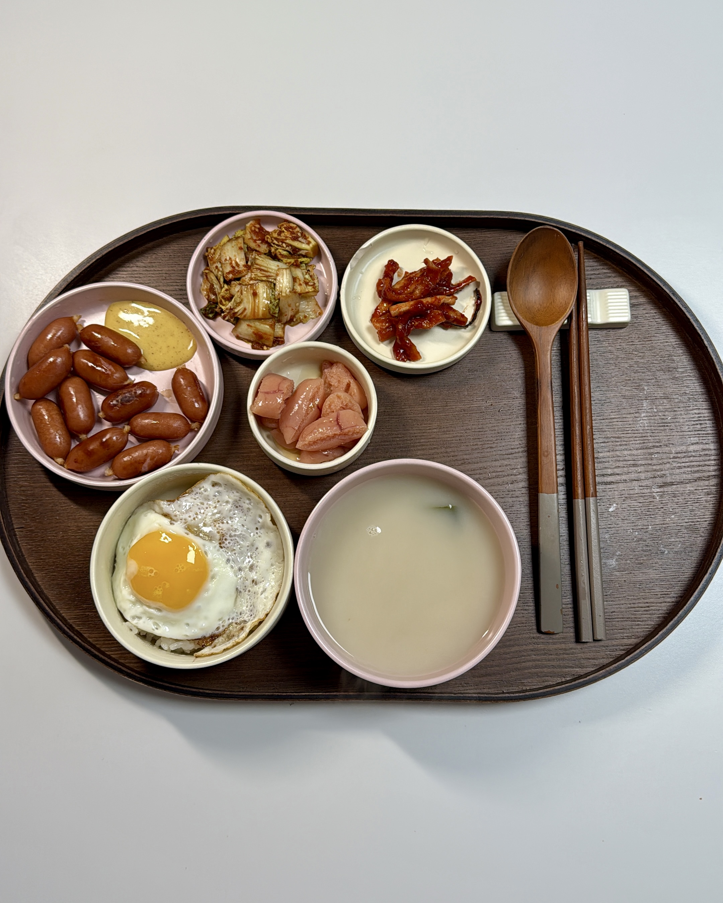
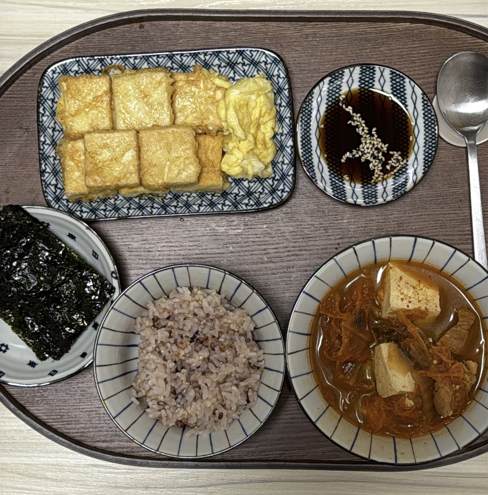
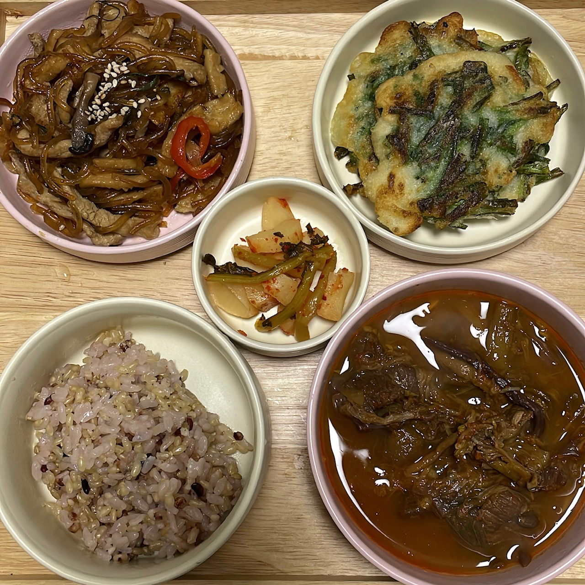

혼밥 앨범
🏡 혼자 먹는 밥상
속 편한 사골국부터 칼칼하게 끓인 국물 요리까지, 오롯이 나를 위해 채우는 혼밥 기록

속 편한 한 그릇
사골국과 비엔나 한 상
뽀얀 사골국에 고소한 비엔나소세지, 감칠맛 도는 명란젓과 무말랭이, 상큼하게 버무려낸 봄동겉절이의 든든한 일상 조합.
⏱️ 기록 완료

언제나 정석
돼지고기 김치찌개와 두부구이
푹 끓여낸 칼칼한 김치찌개와 들기름에 노릇하게 지져낸 두부구이. 가장 자주 차려 먹는 익숙한 밥상.
⏱️ 기록 완료

기력 보충
육개장과 노릇한 부추전
얼큰하게 끓여낸 육개장 국물에 달콤 짭조름한 잡채, 겉바속촉 바삭하게 구워낸 부추전으로 알차게 채운 든든한 주말 한 상.
⏱️ 기록 완료

편안한 휴식
야들야들 수육과 막걸리
두툼하게 썰어낸 수육에 아삭아삭 갓 담근 싱싱한 김장김치, 막걸리를 곁들여 완벽한 주말 한때를 완성한 보상형 한상.
⏱️ 기록 완료

김치찌개에 두부부침 조합 진짜 맛있어 보임. 오늘 메뉴 당첨.
아롱사태 전골 비주얼 완벽함. 편안하고 솔직하게 기록하는 식탁 이야기 잘 보고 가기.